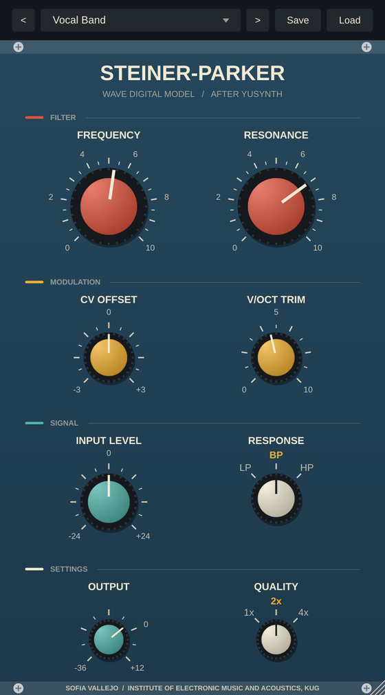
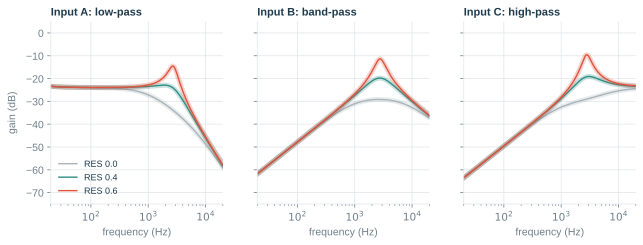
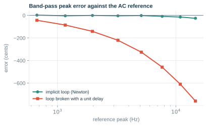
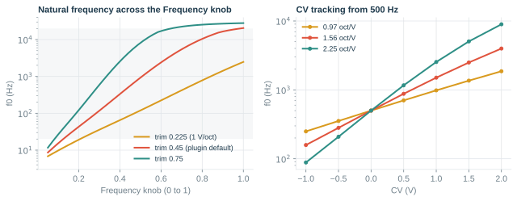
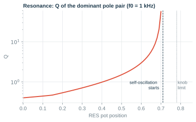
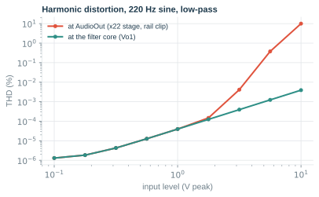
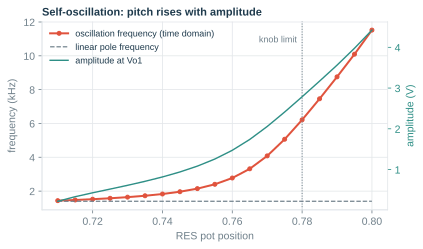
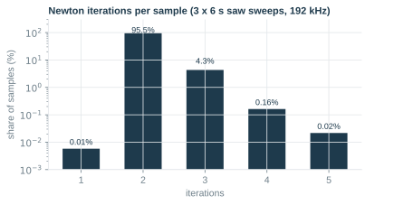

Modeling the Steiner-Parker filter
I turned a 1970s diode filter into a wave digital model and a free VST3/AU plugin. This is how I did it, how I tested it, and what turned up along the way.
I wanted to model an analog filter that hasn't already been done a hundred times. The Moog ladder, the MS-20 and the TB-303 all have papers and plugins. My first pick was the EDP Wasp, until I found a DAFx 2022 paper that models it already. The Steiner-Parker has a few plugin clones but, as far as I could find, no published circuit model, and its schematic is public. So that's the one.
The plugin is in beta. It runs on macOS as VST3 and AU, and everything is open source.

The circuit
Most analog filters use transistors. This one uses a chain of ten 1N4148 diodes with three 1.5 nF capacitors hanging off it. A transistor pair pushes current through the chain, and that current sets the cutoff: more current, higher cutoff.
There are three inputs. Feed the signal in at one point of the network and you get a low-pass, at another a band-pass, at the third a high-pass, all from the same circuit and the same output. On the module that's the Response switch.
I used the schematic from Leonardo Laguna Ruiz's Vult Eurorack build (schematic PDF). It's based on Yves Usson's Yusynth version, which goes back to Nyle Steiner's Synthacon. Every resistor and capacitor value in the model comes from that schematic. This is roughly how the signal moves through it:
The model
I used wave digital filters (WDF). Each capacitor becomes a small WDF element that remembers one value from the last sample. Everything else is nonlinear and tangled together: the diodes, the transistor pair, the op-amps and the resonance feedback. I treat all of that as one block and solve it every sample with Newton's method.
Diodes in series with nothing between them behave like one bigger diode, so the ten diodes collapse into four groups. With the feedback path, the solver ends up with five unknowns per sample, which is small enough to run in real time.
The resonance feedback loops straight back into that block. A common shortcut is to break such a loop with a one-sample delay, but that puts the resonance in the wrong place (more on that below), so I solve the loop as part of the block.
One thing went wrong at first. At high resonance, Newton started jumping back and forth between two answers instead of settling. The fix was the diode step limiting that SPICE uses (pnjlim). After that it settles in two or three steps, even at the top of the resonance range.
The model exists three times, with the same equations in each:
- Python (numpy and numba), for the analysis and the plots on this page
- C++, the code inside the plugin
- JSFX, a version that runs in Reaper without compiling anything
The C++ and JSFX versions match the Python one to within about 1 microvolt.
The build
The plugin is made with JUCE 8 and CMake, so there's no Xcode project to deal with. One script builds a universal binary (Apple silicon and Intel) as VST3, AU and a standalone app, and installs it. A second script packs the beta zip.
xcode-select --install
brew install cmake ninja
cd plugin && ./build_mac.shThe panel is laid out like a Eurorack module, and the knob colours follow function. Red is the filter (Frequency, Resonance), yellow is modulation (CV offset, V/oct trim), teal is the signal path (Input level, Output), and cream marks the switches. It has 8 factory presets, and you can save and load your own.
Before releasing it I ran Apple's auval and Tracktion's pluginval. Both passed, for the AU and the VST3.
Testing it
I don't have the hardware yet, so I can't compare against a real module. What I can check is whether the simulation actually solves the circuit it's supposed to. For each test I compare the model against something calculated another way.
Frequency response
I wrote a second, completely separate analysis that linearizes the circuit and solves it directly in the frequency domain. Then I sent a tiny impulse through the real model, small enough that it behaves linearly, and compared the two.

The feedback loop
This is why I didn't take the one-sample-delay shortcut. With the delay, the resonance peak slides flat as the cutoff goes up. Solved properly, it stays where it should.

Cutoff range
The cutoff is set by a resistor network that adds up the CUT knob, the CV input and a trimmer (T1), which sets how many octaves you get per volt.
You can't have both in this circuit. If you trim it to exactly 1 V/octave, the Frequency knob only covers 10 Hz to 2.5 kHz. That's why my first version sounded so dark. The plugin now defaults to a trim of 0.45, which gives 5 Hz to 20 kHz at about 1.5 octaves per volt.

Resonance
Turning up the resonance pot sends more of the filter's output back into it. At some point the filter starts singing on its own.

Where the dirt comes from
I expected the diodes to give the filter its character. At normal levels they barely do anything. The 47 k input resistor drops the signal about 48 times before it gets to them.

Self-oscillation pitch
When the filter self-oscillates, its pitch goes up as it gets louder. The linear analysis says it should sit near 1 kHz. In the time-domain model it starts at 1.4 kHz and reaches 6.2 kHz at the end of the knob.

How hard the solver works

Everything else
| Check | Result | |
|---|---|---|
| Plugin C++ against the Python model | max 0.8 µV | PASS |
| JSFX against the Python model | max 1.4 µV | PASS |
Apple auval, 11 to 192 kHz | all tests | PASS |
pluginval strictness 5, VST3 and AU | all tests | PASS |
| Stress test: every mode, +24 dB drive, full resonance, fast cutoff jumps | no NaNs | PASS |
Listen
A 55 Hz sawtooth at Eurorack level (5 V), with the cutoff sweeping slowly up and back down.
What's missing
- A real module to compare against. If you have a Yusynth or Vult build and can record it, please write to me.
- Some parts are idealized. The transistor pair is ideal, the diodes have no capacitance, and the op-amps are perfect amplifiers with a soft clip at the rails.
- The top of the resonance pot is left out. Above about 0.8, the model starts oscillating at 15 to 28 kHz and the solver struggles. I think that comes from the simplifications above, so it stays out until I can check it.
- No all-pass setting. The Yusynth panel has an AP position. The Vult build doesn't, and I'm not adding it without seeing the real wiring.
- Mac only, and not notarized. macOS needs one Terminal command after installing (below). Windows and Linux builds should work from the same code, but I haven't released them yet.
Try the beta
- Download the zip and unzip it.
- Copy
Steiner-Parker Filter.vst3into~/Library/Audio/Plug-Ins/VST3/andSteiner-Parker Filter.componentinto~/Library/Audio/Plug-Ins/Components/. In Finder, use Go > Go to Folder and paste the path. - Open Terminal and paste these two lines. They only remove the "downloaded from the internet" flag from those two files.
xattr -dr com.apple.quarantine ~/Library/Audio/Plug-Ins/VST3/"Steiner-Parker Filter.vst3"
xattr -dr com.apple.quarantine ~/Library/Audio/Plug-Ins/Components/"Steiner-Parker Filter.component"- Rescan plugins in your DAW and look for Steiner-Parker Filter by Sofia Vallejo. AU plugins show up after restarting the DAW.
Found a bug, or something sounds off? Open an issue and tell me your DAW, sample rate and settings.
Credits
The circuit is by Nyle Steiner (the Synthacon), Yves Usson (Yusynth) and Leonardo Laguna Ruiz (Vult), whose schematic values the model uses. The plugin only models how the circuit behaves; it doesn't include their drawings or PCB files. It's built with JUCE 8, and the VST3 SDK is by Steinberg. The code is open source under the GNU AGPL v3.